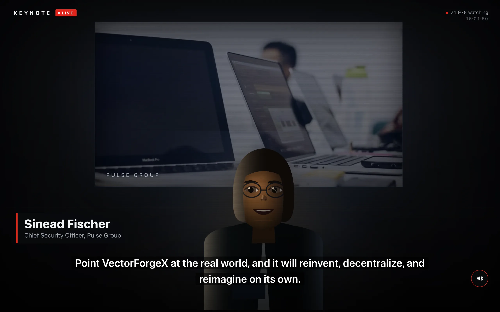

The Infinite Keynote is a product launch that never ends. A fictional executive walks onto a dark stage every ten minutes or so, launches something, thanks everyone, and walks off to applause, around the clock. Everyone watching sees the same speaker saying the same sentence at the same moment, and nothing on the server keeps track of any of it. The only shared state is the time.
As far as the code is concerned the broadcast began at midnight UTC on 1 January 2025. From there the timeline is a sequence of units, one per speaker: a 9 second announcer intro, 3.5 seconds of applause, the keynote, and a 7 second closing ovation. Each keynote's length is a hash of the scene index mapped into 8 to 12 minutes. So any client can take the current time, walk the units forward from a cached anchor, and know which scene is live and how far in. Devices agree on the time by hitting a tiny /time endpoint four times and keeping the sample with the shortest round trip, which is Cristian's algorithm, and fall back to the local clock when the endpoint is unreachable.
Audio that has to fit a slot it hasn't seen
The speech is synthesized offline with Piper. An earlier version synthesized in the browser, had to prefetch phrases to hide the synthesis latency, and had every viewer rendering the same audio. Now a GitHub Actions job runs every three hours. A plan step reads the catalog in R2 to see how far ahead content already reaches, and splits the gap up to 96 scenes ahead of live, about 16 hours, into 12 shards. One job downloads the 19 voice models into a cache, and each shard installs ffmpeg and Piper, synthesizes its scenes, and uploads them as immutable objects. A last step lists the bucket, deletes scenes more than 360 behind the newest, and writes a small index with the lowest and highest scene available.
The awkward part is that each scene's audio has to fit a slot whose length the clock fixed before any audio existed. The grammar lays sentences out at a nominal 380 ms per word, but Piper speaks faster than that, so a scene generated to the nominal budget ended early and left a silent gap before the next speaker. Now the grammar over-generates, about twice the slot in nominal phrases, and the build stops on real durations measured with ffprobe. It synthesizes the announcer intro, then the wrap-up (the call to action and the thank-you) before the body, so it knows exactly how many milliseconds to hold back for it. Body phrases are appended until the next one would cross the slot minus the closing applause minus the wrap-up. Then the wrap-up, then one long applause clip, and ffmpeg concatenates the lot into a mono 22.05 kHz mp3 at 64 kbps with a JSON manifest giving every segment's start and duration. Every keynote closes the same way and nobody is cut off mid sentence.
The client runs the same clock math, fetches the live scene's manifest and mp3, and seeks to the wall-clock offset, so a late joiner lands mid-talk in sync. It re-seeks only if the audio drifts more than 2.5 seconds, and never within 3 seconds of loading a scene, because a tighter tolerance chased the clock while a fresh scene was still buffering and skipped the announcer's first words. The next scene's mp3 is pulled into the HTTP cache 45 seconds before it starts. If the audio job ever falls behind the clock, the player loops over the scenes that do exist rather than going dark. Actions would have to be down for 16 hours for that to happen, and I haven't built anything that would tell me it had.
The mouth
The presenter is drawn on a 2D canvas and the mouth follows the audio. With sound on, an AnalyserNode with a 1024-point FFT gives the mean energy in bins 4 to 72, roughly 190 Hz to 3.4 kHz, which is where voiced speech sits. Tracking that band instead of raw loudness makes the mouth open on vowels and close between words instead of flapping with volume. Below 0.05 the level is gated to zero, above that it's scaled by 2.6 and eased with a fast attack and a slower release. Muted viewers get a procedural speech rhythm instead, and the two are never mixed while audio plays, because a procedural envelope running next to real audio reads as bad lip-sync.
The viewer count is fake in the same way everything else is: a pure function of the clock, several octaves of hashed value noise summed around 21,000, so every viewer sees the same number and it twitches like a live counter. The speech comes from a grammar over a categorized lexicon of industry jargon, keyed to the scene index, with the topic changing every scene. The applause is nine short and nine long CC0 clips with hall reverb, chosen per scene by a seeded pick.